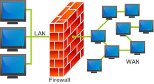

In informatica, nell'ambito delle reti di computer, un firewall (termine inglese dal significato originario di parete refrattaria, muro tagliafuoco, muro ignifugo; in italiano anche parafuoco o parafiamma) è un componente passivo di difesa perimetrale di una rete informatica, che può anche svolgere funzioni di collegamento tra due o più tronconi di rete, garantendo dunque una protezione in termini di sicurezza informatica della rete stessa.